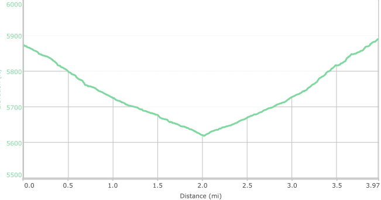

Hike New Mexico
w/ Tom & Ken
Diablo Canyon Hike
| Difficulty | Round-trip | Type | Elev. Chg. | Exposure | Wow Factor | Facilities | Seasons | Flickr | By Car |
|---|---|---|---|---|---|---|---|---|---|
| Easy | 4 miles | Out-and-back | 300 ft | Full sun | Lava canyon | None | All | Album |  |



- Jan 23, 2016: From the trailhead
- Jan 23, 2016: Contorted solidified lava
- Jan 23, 2016: Colorful mineral rich lava
- Jan 23, 2016: Exiting the canyon seeing Otowi Peak
- Jan 23, 2016: Leaving the canyon following the wash
- https://www.flickr.com/photos/139088815@N08/26585696920/in/photostream/
- https://www.flickr.com/photos/139088815@N08/26765006032/in/photostream/
- https://www.flickr.com/photos/139088815@N08/24592786785/in/photostream/
- https://www.flickr.com/photos/139088815@N08/24592761755/in/photostream/
- https://www.flickr.com/photos/139088815@N08/26765012652/in/photostream/
Parking for the Diablo Canyon hike is off of Old Buckman Road, a mile or two before reaching the Rio Grande. There is a sign indicating the canyon. Once there, the steep lava cliffs are not only striking, but also present rock climbers a great practice site. The hike proceeds through the canyon, which is by far the most scenic part of the trip, and down a wide arroyo to the Rio Grande. Interesting lava flows are viewable en route, and eventually Otowi Peak can be seen to the south.